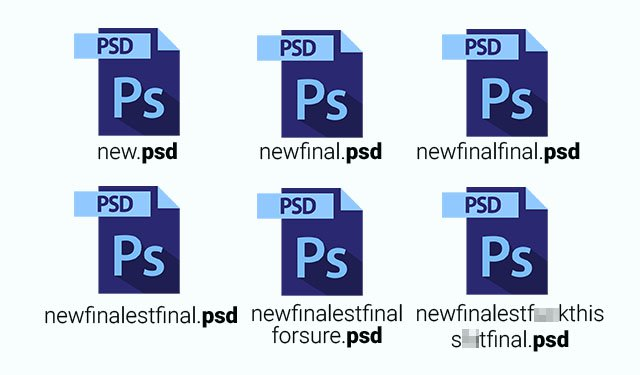

introdução ao git
apenas um guia prático para começar com git sem complicação ;
Adriano Gil
adriano.gil@samsung.com

Arquivos e suas versões
Arquivos e suas versões
Versionamento e seus benefícios
- Backups
- Reprodutibilidade
- Ramificação de projeto
- Comparar diferentes versões do mesmo arquivo
- Marcação e resgate de versões estáveis
Sistemas de Controle de Versão
Sistema que registra as mudanças feitas em um arquivo ou um conjunto de arquivos ao longo do tempo permitindo que você possa recuperar versões específicas.
Modelos Centralizados
Modelos Distribuídos
Git
Inspirado no BitKeeper, git foi criado em 2005 pelo Linus Torvalds
Objetivos do Git
- Velocidade
- Completamente distribuido
- Suporte para desenvolvimento não-linear (em milhares de branches paralelos)
- Capacidade de lidar eficientemente com grandes projetos como o Linux
criando um novo repositório
crie uma nova pasta, abra-a e execute o comando
git init
para criar um novo repositório.
obtenha um repositório
crie uma cópia de trabalho em um repositório local executando o comando
git clone /caminho/para/o/repositório
quando usar um servidor remoto, seu comando será
git clone usuário@servidor:/caminho/para/o/repositório
fluxo de trabalho
seus repositórios locais consistem em três "árvores" mantidas pelo git.
a primeira delas é sua Working Directory que contém os arquivos vigentes.
a segunda Index que funciona como uma área temporária
e
finalmente a HEAD que aponta para o último commit (confirmação) que você fez.
fluxo de trabalho
seus repositórios locais consistem em três "árvores" mantidas pelo git.

adicionar & confirmar
Você pode propor mudanças (adicioná-las ao Index) usando
git add <arquivo>
git add *
Este é o primeiro passo no fluxo de trabalho básico do git.
adicionar & confirmar
Para realmente confirmar estas mudanças (isto é, fazer um commit), use
git commit -m "comentários das alterações"
Agora o arquivo é enviado para o HEAD, mas ainda não para o repositório remoto.
enviando alterações
Suas alterações agora estão no HEAD da sua cópia de trabalho local. Para enviar estas alterações ao seu repositório remoto, execute
git push origin master
Altere master para qualquer ramo (branch) desejado, enviando suas alterações para ele.
enviando alterações
Se você não clonou um repositório existente e quer conectar seu repositório a um servidor remoto, você deve adicioná-lo com
git remote add origin <servidor>
Agora você é capaz de enviar suas alterações para o servidor remoto selecionado.
verificando suas alterações antes do commit
Para listar quais arquivos estão marcados para commit, use
git status
Os arquivos/diretórios que nunca foram adicionados em um commit são exibidos como Untracked files
Arquivos ignorados
Em determinados projetos, a lista de arquivos que nunca serão commitados pode ser longa. Nesses casos é melhor adicionar o path destes arquivos em um
.gitignore
Todos os arquivos identificados são removidos da listagem do git status e para ser adicionados no projeto deve ser usado o git add -f
verificando os commits
git whatchanged
Se você não clonou um repositório existente e quer conectar seu repositório a um servidor remoto, você deve adicioná-lo com
git remote add origin <servidor>
Agora você é capaz de enviar suas alterações para o servidor remoto selecionado.
verificando suas alterações antes do commit
git log
git log --pretty=oneline
git log --since=2.weeks
Existem outros filtros como –since, --after, --until, --before, --author
Se você não clonou um repositório existente e quer conectar seu repositório a um servidor remoto, você deve adicioná-lo com
git remote add origin <servidor>
Agora você é capaz de enviar suas alterações para o servidor remoto selecionado.
rotulando
é recomendado criar rótulos para releases de software. Este é um conhecido conceito, que também existe no SVN.
Você pode criar um novo rótulo chamado 1.0.0 executando o comando
git tag 1.0.0 1b2e1d63ff
o 1b2e1d63ff representa os 10 primeiros caracteres do id de commit que você quer referenciar com seu rótulo.
Você pode obter o id de commit com
git log
você pode também usar menos caracteres do id de commit, ele somente precisa ser único.
atualizar & mesclar
para atualizar seu repositório local com a mais nova versão, execute
git pull
na sua pasta de trabalho para obter e fazer merge (mesclar) alterações remotas.
para fazer merge de um outro branch ao seu branch ativo (ex. master), use
git merge <branch>
atualizar & mesclar
em ambos os casos o git tenta fazer o merge das alterações automaticamente. Infelizmente, isto nem sempre é possível e resulta em conflitos.
Você é responsável por fazer o merge estes conflitos manualmente editando os arquivos exibidos pelo git.
Depois de alterar, você precisa marcá-los como merged com
git add <arquivo>
antes de fazer o merge das alterações, você pode também pré-visualizá-las usando
git diff <branch origem> <branch destino>
sobrescrever alterações locais
No caso de você ter feito algo errado (que seguramente nunca acontece ;) você pode sobrescrever as alterações locais usando o commando
git checkout -- <arquivo>
isto substitui as alterações na sua árvore de trabalho com o conteúdo mais recente no HEAD. Alterações já adicionadas ao index, bem como novos arquivos serão mantidos.
sobrescrever alterações locais
Se ao invés disso você deseja remover todas as alterações e commits locais, recupere o histórico mais recente do servidor e aponte para seu branch master local desta forma
git fetch origin
git reset --hard origin/master
ramificando
Branches ("ramos") são utilizados para desenvolver funcionalidades isoladas umas das outras. O branch master é o branch "padrão" quando você cria um repositório. Use outros branches para desenvolver e mescle-os (merge) ao branch master após a conclusão.

ramificando
crie um novo branch chamado "funcionalidade_x" e selecione-o usando
git checkout -b funcionalidade_x
retorne para o master usando
git checkout master
e remova o branch da seguinte forma
git branch -d funcionalidade_x
um branch não está disponível a outros a menos que você envie o branch para seu repositório remoto
git push origin <funcionalidade_x>
dicas úteis
Inteface gráfica padrão
gitk
usar saídas do git coloridas
git config color.ui true
exibir log em apenas uma linha por commit
git config format.pretty oneline
fazer inclusões interativas
git add -i
recursos & links
clientes gráficos
recursos & links
guias